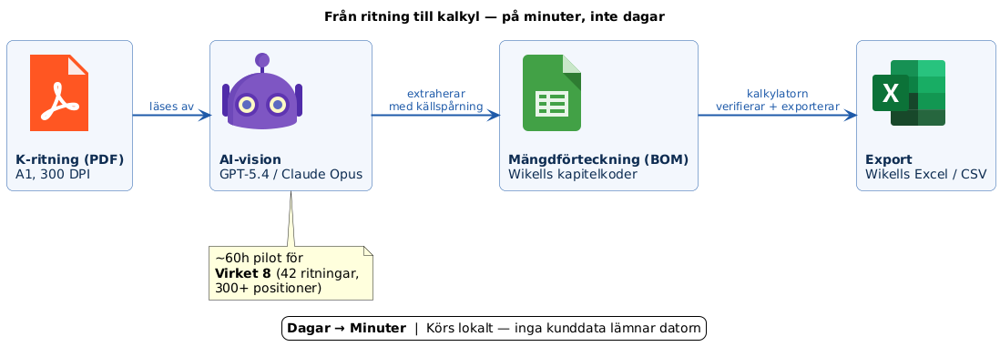
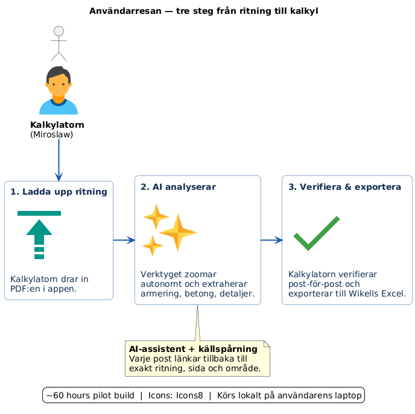
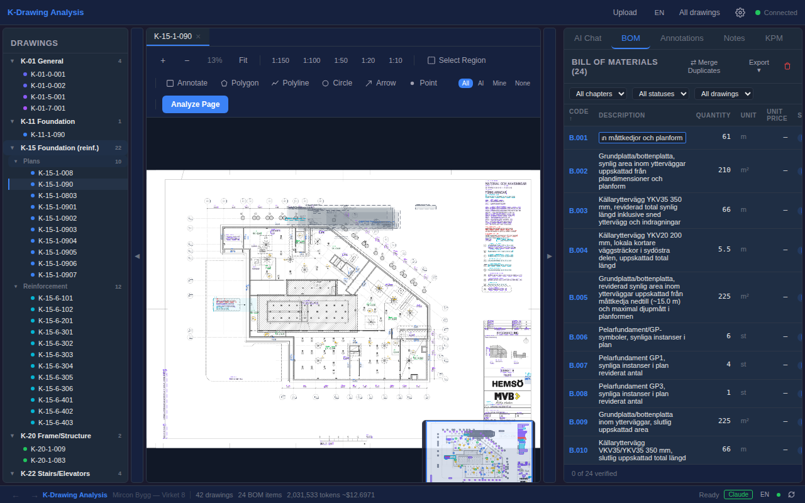
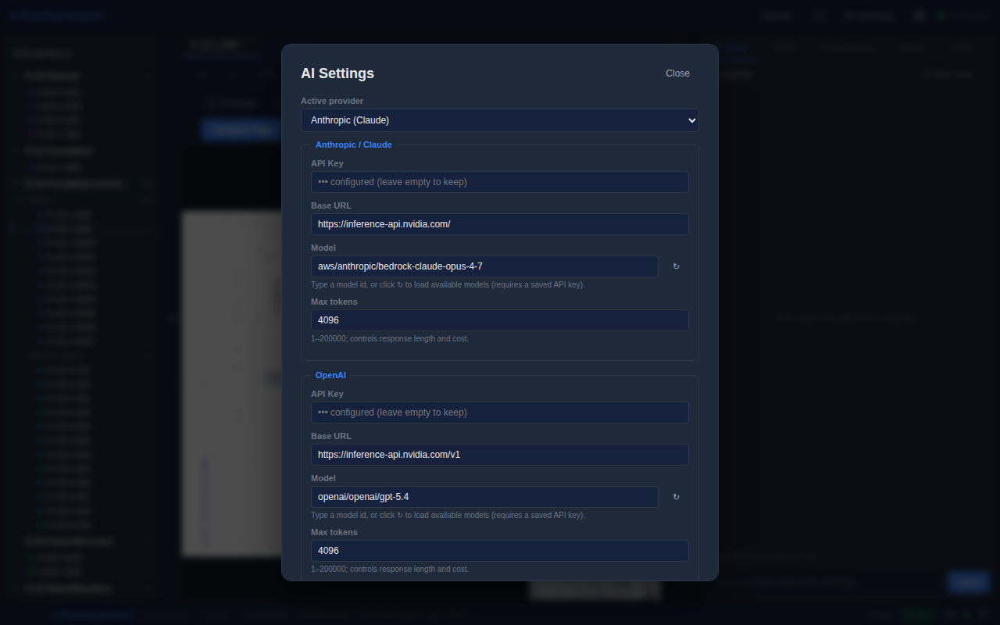
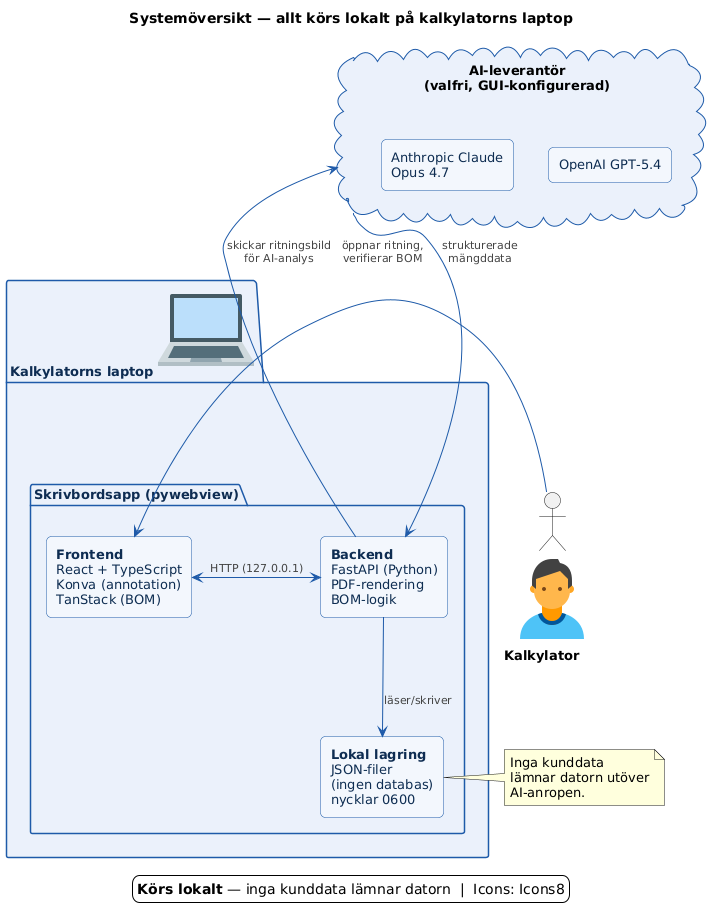

AI-driven mängdavtagning från K-ritningar.
Ett färdigt lokalt skrivbordsverktyg som läser K-ritningar med AI-vision, bygger en spårbar hierarkisk BOM och exporterar direkt till Wikells.
Mängdavtagning är dagar av specialistarbete — och en vanlig felkälla i kalkylen.
-
01
Cirka 300 positioner per medelprojekt
Virket 8 ensamt: 42 K-ritningar, var och en med armeringsförteckningar, betongvolymer, infästningar och detaljer att räkna för hand.
-
02
Manuell läsning är långsam och felbenägen
Kalkylatorer avläser armeringsdiametrar, betongtjocklekar och infästningsdetaljer — och skriver sedan in dem i Excel-mallar.
-
03
Revisioner (KPM) spåras i lösa Excel-blad
De flesta team lagrar KPM-ändringar i ad-hoc Excel-filer utan koppling tillbaka till ritningsområdet — svårt att verifiera senare.
Från PDF-ritning till Wikells Excel på minuter.
En AI-vision-pipeline läser ritningen i 300 DPI, extraherar armering, betong och detaljer med källspårning, kalkylatorn verifierar inline och exporten går direkt till Wikells.

Tre steg — ritning in, verifierad BOM ut.

Släpp K-ritningens PDF
Flerfilsimport, automatisk uppdelning av sammanfogade PDF:er, AI-baserad K-kod-namngivning. Ritningsindex klart på sekunder.
AI-vision extraherar BOM:en
300 DPI-avläsning, autonom zoom, hierarkiska poster med Wikells-kapitelkoder. Varje post länkad till sitt område.
Kalkylatorn verifierar och exporterar
AI-poster markerade för granskning, inline redigera / acceptera / avvisa, revisionshistorik bevarad. Ett klick till Excel.
Åtta funktioner, i drift idag.
Kalibrerade för en svensk kalkylators dagliga arbetsflöde.
PDF-visare för A1-format
2384 × 1684 pt, smidig pan och zoom, JPEG-läge som fallback.
AI-visionanalys
GPT-5.4 eller Claude Opus 4.7 med autonomt zoom-beteende.
Hierarkisk BOM
Wikells kapitelkoder, automatisk numrering, grupperade poster.
Annotationsöverlägg
Varje BOM-rad fäst mot ett område. AI och manuella markeringar i samma färgkodade lager.
Korsritningsanalys
Följer MATERIAL- och typdetaljreferenser; attribuerar kvaliteter tillbaka till källans BOM-rad.
Wikells Excel-export
Fyrbladig arbetsbok och CSV i det format kalkylatorer redan använder.
Tvåspråkigt gränssnitt
Svenska och engelska med AI-driven översättningslager.
Konfigurerbar AI-leverantör
Växla OpenAI och Anthropic per projekt från GUI:t.
Se exakt vad AI:n har sett.
Varje BOM-rad är fäst mot ett område på ritningen. Inga siffror från en svart låda.

Områdeslänkad per rad
Ett klick från en BOM-rad hoppar till exakt den rektangel på ritningen som siffran kommer ifrån — och tillbaka igen.
Färgkodade efter materialtyp
Armering, betong, infästningar, nivåer, komponenter — varje lager har egen palett. Stäng av för att rensa vyn, slå på för granskning.
AI och manuella i samma lager
Kalkylatorns markeringar ligger vid sidan av AI:ns förslag med bevarad härkomst; du vet alltid vilken som är vilken.
Varje post behåller sitt ursprung.

Varje BOM-post länkar tillbaka
Till exakt ritning, sida och område den extraherades från — ett klick för att hoppa till källan.
AI-poster markerade "Behöver granskning"
Kalkylatorn ser direkt vilka rader som är AI-förslagna vs. bekräftade. Förtroenderankning per post.
Verifiera, avvisa eller redigera inline
Tangentbordsdrivet granskningsflöde. Kalkylatorn förblir ansvarig varje gång.
Revisionshistorik bevarad
KPM-ändringar spåras över ritningsrevisioner; inget tappas bort mellan iterationer.
AI:n följer korsreferenser för att hämta rätt värden.
Betongklasser, armeringskvaliteter och typdetaljspecifikationer ligger sällan på ritningen framför dig. Verktyget läser den refererade ritningen och attribuerar specen tillbaka till BOM-raden.
K-15-6-101 — grundsektion, dragstagsdetalj
Visar armering Ø16 s150 kring dragstaget, hänvisar till "MATERIAL OCH ANVISNINGAR per K-01-0-001". Materialkvalitet finns inte på detta blad.
K-01-0-001 — allmänna anvisningar
Löser upp K500 C-T lösarmeringskvalitet och NK500AB-W natarmering. Attribueras tillbaka till källritningens BOM-rader.
Autonom korsreferensföljning
När en ritning säger "MATERIAL per K-01-0-001" öppnar verktyget det bladet, läser specen och återupptar källextraktionen — ingen manuell inmatning.
Kvaliteter lagras där de hör hemma
Armeringskvalitet registreras mot den allmänna ritningen och attribueras tillbaka till detaljens BOM-rader — aldrig uppfunnen på detaljbladet.
Syskon flaggas, jagas inte
Angränsande referenser som inte bidrar till raden stannar flaggade för kalkylatorn — ingen bortkastad analysbudget.
Byt leverantör per projekt — från GUI:t.
GUI-konfiguration, ingen filredigering
Modell, API-nyckel och max tokens ställs in från en settings-modal.
OpenAI eller Anthropic
GPT-5.4-vision eller Claude Opus 4.7 — välj rätt modell för projektet.
Nyckel lagras lokalt med läge 0600
Aldrig uppladdad, aldrig loggad. Endast användarkontot har läsrättighet.
Byt per projekt eller per kund
Olika kunder kan ha olika AI-kontrakt — en inställningsändring, omedelbar växling.

Körs lokalt. Inga kunddata lämnar datorn.

En .exe på kalkylatorns laptop
FastAPI-backend och React-frontend paketerat med pywebview. JSON på disk — ingen databas, ingen synk. Ritningsbilder skickas bara till vald AI-leverantör för analys.
Ingen molnlagring av kalkyldata
Kundens projektfiler lämnar aldrig kalkylatorns maskin.
Transparent för användaren
Varje utgående anrop är synligt; vald AI-leverantör är alltid explicit.
Grunden är på plats. Fyra spår utvecklar produkten härifrån.
Multi-projekt BOM
Delat ritningsbibliotek med separat, avgränsad BOM per projekt. Byt kund utan att blanda data.
Wikells prisintegration
Automatisk à-pris-uppslag mot Wikells prisdatabas. BOM blir en live kostnadskalkyl.
Projektnivå-rollup
Aggregera armering, betong och komponenter över alla grundplaner till en projekttotal — BOM per ritning rullar redan upp per rad idag.
Valbar SaaS-option
För team där molnlagring är acceptabel — samma lokalt-först-produkt med ett hostat alternativ.
Tack.
Produkten är byggd. Arkitekturen är lokalt först. Nästa steg är fler projekt, fler kalkylatorer och prisintegration.